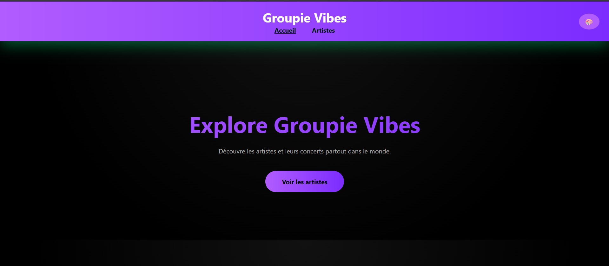
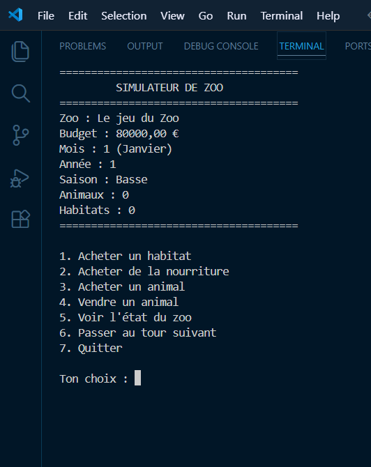
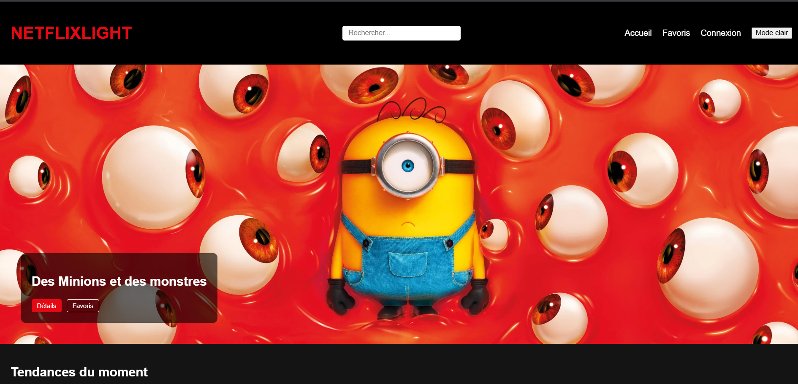

Mes Projets
Projets académiques et personnels réalisés durant ma formation. Cette section évoluera au fil de mon parcours.

🎮 RPG Tour par Tour
Jeu en terminal développé en Go avec système de combat, progression du personnage, gestion d’inventaire et logique de jeu tour par tour.
Voir le code →
🔵 Puissance 4
Projet de jeu Puissance 4 combinant Go, HTML et CSS, avec gestion des règles, détection des victoires et interface visuelle.
Voir le code →
🎵 Groupie Vibes
Application web développée en Go avec HTML et CSS, centrée sur l’affichage et la structuration de données musicales.
Voir le code →
🦁 Zoo Simulator
Simulation de gestion d’un zoo développée en C#, avec gestion des animaux, des ressources et logique métier.
Voir le code →
🎬 NetflixLight
Projet en cours de développement autour d’une interface inspirée des plateformes de streaming, avec travail sur le design et la structure.
Voir le code →